🐦 Collecte & Préparation des Tweets#
Pourquoi Twitter ?#
Twitter est une plateforme où l’information circule rapidement et massivement.
C’est un flux continu d’opinions, de réactions et de spéculations, souvent en lien direct avec l’actualité économique et les entreprises cotées.
Nous nous intéressons ici à Tesla ($TSLA).
Hypothèse : les tweets quotidiens à son sujet pourraient refléter ou anticiper les variations de son cours boursier.
Objectif de cette section#
Avant toute modélisation, il faut construire une base de données propre, fiable et exploitable.
Dans ce chapitre, nous allons :
Scraper automatiquement des tweets via Nitter, une alternative à Twitter sans JavaScript ni authentification.
Nettoyer les textes (liens, mentions, ponctuation…).
Filtrer pour ne garder que les tweets en anglais.
Analyser le sentiment avec plusieurs modèles NLP.
Sauvegarder les données pour les étapes suivantes.
Aperçu technique#
Le scraping est réalisé en Python avec Selenium, accompagné d’une rotation de proxies HTTPS pour contourner les limitations d’accès.
Chaque tweet est enrichi par 4 scores de sentiment :
1 issu de VADER (modèle lexical basé sur des règles),
3 issus de Transformers spécialisés dans la finance.
Les résultats sont sauvegardés en CSV mensuels, ainsi qu’un fichier global agrégé.
Scraping sans API#
Utilisation de Nitter, une interface alternative à Twitter, pour contourner les limites de l’API officielle.
Processus :
Requête par mot-clé et par jour (
Tesla,TSLA, etc.).Navigation automatique dans les pages pour extraire les tweets.
Stockage brut avec métadonnées (date, utilisateur, texte…).
Scraping automatisé via un navigateur headless, avec gestion des délais et rotation de proxies.
Schéma des données exportées#
Colonne |
Exemple |
Description |
|---|---|---|
|
|
Identifiant unique du tweet |
|
|
Date de récupération |
|
Texte brut |
Contenu original du tweet |
|
|
Statut vérifié du compte |
|
Texte nettoyé |
Sans liens, mentions, ponctuation, etc. |
|
|
Score composé selon VADER |
|
|
Score par modèle HF : |
Schéma de récupération des données#
Le diagramme ci-dessous illustre le processus complet, du scraping à la sauvegarde des fichiers CSV :

🧠 Étapes conceptuelles#
1. Nettoyage et filtrage linguistique#
Les tweets sont nettoyés pour retirer liens, mentions, emojis, etc.
Un filtre de langue permet de ne garder que les tweets en anglais, compatibles avec les modèles NLP utilisés.
2. Analyse de sentiment multi-modèle#
Chaque tweet nettoyé est évalué par plusieurs modèles :
Type de modèle |
Exemple utilisé |
Caractéristiques |
|---|---|---|
Lexical |
VADER |
Rapide, basé sur des règles, mais limité pour les nuances |
Transformers généralistes |
DistilRoBERTa |
Plus fins, mais moins adaptés au contexte financier |
Transformers spécialisés |
FinancialBERT, DeBERTa-v3 |
Entraînés sur des textes financiers, plus pertinents ici |
Chaque modèle attribue un score de polarité : positif (+1), neutre (0), ou négatif (−1).
3. Stockage structuré#
Les résultats sont organisés :
Par mois civil (
tweets_2022_01.csv) pour les analyses temporelles,Dans un fichier global (
tweets_with_sentiment.csv) pour les analyses agrégées.
Chaque ligne correspond à un tweet enrichi de métadonnées et de scores.
⚠️ Limites#
Qualité des tweets : spam, ironie, langage implicite…
Détection linguistique : erreurs possibles sur des tweets courts.
Modèles parfois divergents : résultats incohérents pour certains tweets ambigus.
Instabilité de Nitter : interruptions occasionnelles, nécessitant des contournements.
🔗 Pour aller plus loin#
👉 Prochaine étape : croiser les tweets avec les cours boursiers de Tesla pour étudier les corrélations et construire des indicateurs de sentiment.